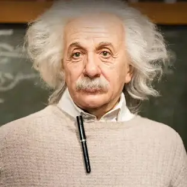

Albert Einstein was a theoretical physicist who developed the theory of relativity, one of the two pillars of modern physics (alongside quantum mechanics). His work is also known for its influence on the philosophy of science. Einstein is best known to the general public for his mass–energy equivalence formula, E = mc2, which has been dubbed "the world's most famous equation". He received the 1921 Nobel Prize in Physics.
Einstein was born in the Kingdom of Württemberg in the German Empire on March 14, 1879. His father, Hermann Einstein, was a salesman and engineer, and his mother, Pauline Koch, ran the family household. Albert showed an early interest in science and mathematics, and by the age of 12, he had already discovered his fascination with geometry and algebra.
Some of Einstein's major scientific contributions include:
Einstein was married twice, first to Mileva Marić, a fellow physicist, with whom he had two sons and a daughter. After their divorce, he married his cousin, Elsa Löwenthal. He was known for his pacifist and humanitarian views, advocating for civil rights and nuclear disarmament later in life.
Albert Einstein passed away on April 18, 1955, in Princeton, New Jersey. His theories continue to influence modern science, and his image has become synonymous with the term "genius". His contributions to physics have had a lasting impact, reshaping our understanding of space, time, and energy.